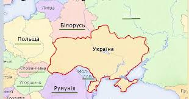
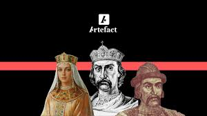
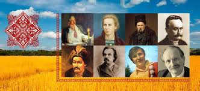
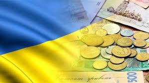
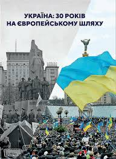
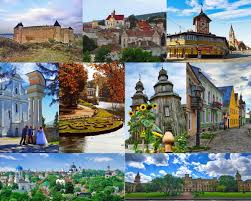

Географія
Україна межує з Польщею, Словаччиною, Угорщиною, Румунією, Молдовою, Білоруссю та Росією. Країна має різноманітний ландшафт, від величних Карпатських гір на заході до родючих степів на сході. Вона також має протяжну берегову лінію на півдні, що виходить на Чорне і Азовське моря.
Україна займає площу понад 600 тисяч квадратних кілометрів і має різноманітний ландшафт. Карпати: Високогір'я на заході країни, відомі своїми мальовничими пейзажами та туристичними маршрутами. Степи: Великий регіон родючих земель на сході та півдні, важливий для аграрного виробництва. Бережна лінія: Південний кордон країни омивається Чорним і Азовським морями, що надає Україні важливі торгові та курортні можливості.
Історія
Історія України є надзвичайно багатою і складною. Від часів Київської Русі, коли Київ був одним з найбільших культурних і політичних центрів Європи, до періодів польсько-литовського та османського панування, українці завжди прагнули до незалежності. Відзначним етапом стало проголошення незалежності в 1991 році після розпаду Радянського Союзу.
Історія України є комплексною і багатошаровою: Київська Русь: Один з найзначніших політичних і культурних центрів середньовічної Європи. Литовсько-польське панування: Вплив на українську культуру та політику в XV-XVII століттях. Козацька доба: Період незалежності та боротьби за автономію під час правління гетьманів. Радянська епоха: Період домінування СРСР, який тривав до 1991 року. Незалежність: Проголошення незалежності 24 серпня 1991 року стало ключовим моментом в історії України.
Культура
Культура України є синтезом слов’янських, європейських і близькосхідних впливів. Українці славляться своєю народною музикою, традиційним одягом (вишиванки) і кухнею, яка включає такі популярні страви як борщ, вареники і галушки. Національні свята, такі як День Незалежності і Різдво, відзначаються з великою урочистістю і виявляють глибокі культурні корені країни.
Українська культура є багатогранною та включає: Мова і література: Офіційна мова — українська, з багатою літературною традицією, від Тараса Шевченка до сучасних авторів. Музика і танці: Традиційні народні пісні і танці, такі як гопак, є важливими частинами культурного спадку. Традиції та свята: Народні свята, як Різдво, Великдень і День Незалежності, відзначаються з глибинними культурними коренями.
Економіка
Україна має багатий природний ресурсний потенціал, зокрема родючі землі, які сприяють розвитку аграрного сектора. Країна є великим виробником зерна, особливо пшениці та кукурудзи. Проте економіка також стикається з викликами, такими як політична нестабільність і конфлікти.
Економіка України має як сильні сторони, так і виклики: Аграрний сектор: Україна є одним з найбільших виробників зерна у світі. Промисловість: Металургія, енергетика і машинобудування є важливими галузями. Торговельні відносини: Країна активно співпрацює з міжнародними партнерами, зокрема в рамках угод з Європейським Союзом.
Політика та суспільство
В Україні розвивається демократія, проте політична ситуація залишається динамічною. Сучасні політичні процеси часто обумовлені боротьбою за територіальну цілісність та економічну стабільність. Після Революції Гідності 2014 року країна зробила значні кроки в напрямку євроінтеграції і реформування.
Політична ситуація в Україні постійно змінюється: Революція Гідності: Важливий момент для демократичного розвитку країни. Конфлікти та реформи: Тривають процеси реформування та вирішення політичних і соціальних конфліктів.
Туризм
Україна є привабливим туристичним напрямком завдяки своїм історичним містам, природним ландшафтам та культурним пам'яткам. Київ, Львів, Одеса та інші міста пропонують безліч історичних і культурних об'єктів. Природні резервати, такі як Карпати та Кримські гори, також привертають туристів з усього світу.
Україна пропонує багато туристичних можливостей: Міста: Київ, Львів, Одеса — культурні та історичні центри з численними архітектурними пам'ятками. Природні резервати: Карпати, Кримські гори та численні національні парки забезпечують різноманітні можливості для активного відпочинку.
Україна пропонує різноманітні враження для туристів: від історичних і культурних екскурсій до активного відпочинку і пляжного релаксу.
Україна – це країна з багатою історією, різноманітними ландшафтами та культурними традиціями, що робить її цікавою для туристів
Майбутнє
Попри виклики, Україна продовжує розвиватися та адаптуватися до сучасних умов. Інновації, розвиток інфраструктури і культурні ініціативи сприяють зміцненню її позицій на міжнародній арені. Незважаючи на складнощі, українці демонструють велику стійкість і надію на краще майбутнє.
Україна — це країна з багатою історією, розмаїтою культурною спадщиною та величезним потенціалом для майбутнього.
Її розвиток та зростання продовжують привертати увагу світової спільноти.